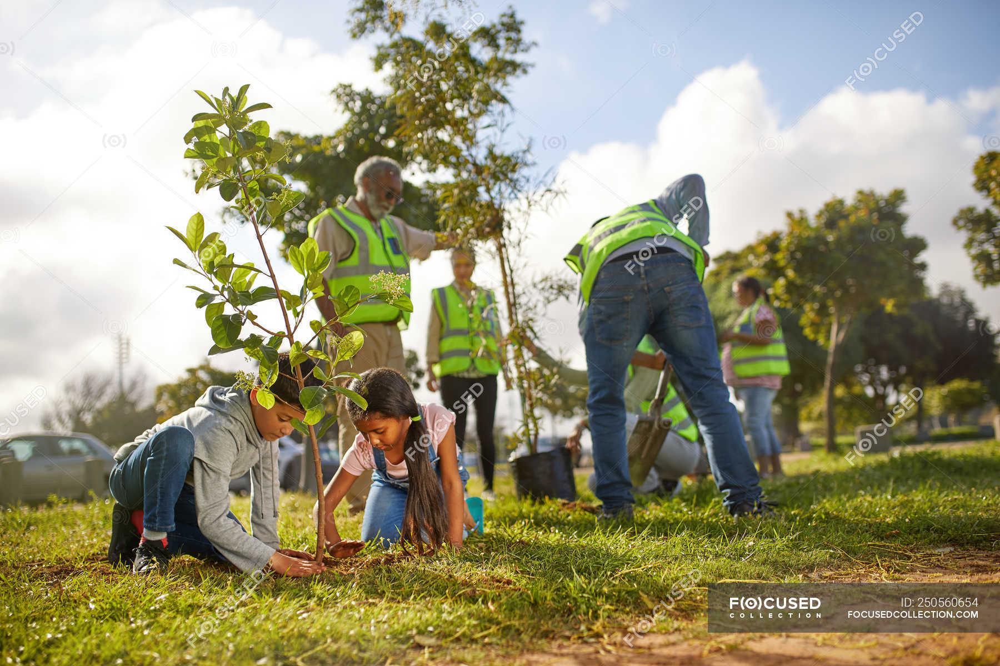
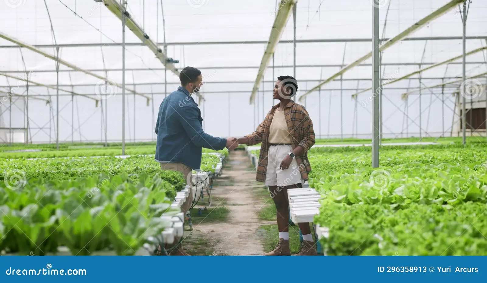

Get Involved
Your time, skills, or donation can make a difference 🌍
Volunteer With Us
Join our community clean-ups, tree planting projects, and school programs. Volunteers are the heart of GFF.
Make a Donation
Your contribution helps fund educational workshops, plant trees, and provide eco-resources for communities.
- R100 → Plant 5 trees
- R500 → Sponsor a school workshop
- R1000+ → Support a community clean-up campaign
Partner With Us
We collaborate with schools, universities, and businesses to create sustainable impact. Become a partner in change.
